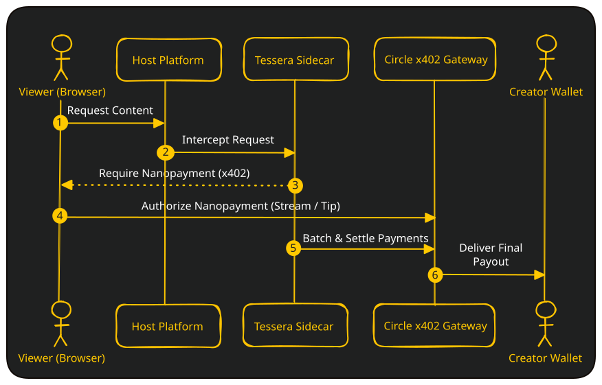

Add nanopayments to any
self-hosted platform.
Tessera is a drop-in monetization layer for self-hosted streaming and publishing servers. Point it at your service, and your users pay in USDC per second of viewing, reading, or interacting. Zero platform modifications required.
Live Showcases
Experience real, production-ready integrations. Fund your session wallet with test USDC, watch, and pay strictly for the seconds you stream.
Federated Video-on-Demand
Watch premium videos directly on our live PeerTube instance. Tessera gates player access: sign in with a secure PIN, fund your wallet, and watch. Billing runs per-second and stops the instant you close the window.
- Off-chain EIP-3009 authorization signatures
- Automated refunds upon exit / cash-out
- Circle Web SDK non-custodial wallet onboarding
Pay-Per-Second Live Streaming
Support live streams in real-time. Tessera injects an interactive paywall directly in front of the server's video element, integrating seamlessly with chat and active streaming events.
- Instant balance updates on dashboard widgets
- Zero chat disruption during streaming session
- Native settlement on Arc L1 blockchain
How it works
Tessera operates as a lightweight sidecar proxy, intercepting and validating micropayments before assets are loaded.

Viewer funds a session
The viewer deposits a small amount of USDC into their non-custodial Circle Wallet. This is the only on-chain transaction. Everything after this is off-chain.
Tessera intercepts the request
The proxy sits in front of your server. When a viewer tries to access content, Tessera requires an x402 payment header before the HTML or media is served.
Circle Gateway settles in USDC
The Gateway verifies the EIP-3009 authorization signature off-chain, confirms the balance, and grants instant access. Thousands of these micro-authorizations are later batched and settled on Arc Testnet in a single transaction.
Why this runs on Arc
On a traditional blockchain, charging $0.0001 per second of video is economically broken. A single Ethereum gas fee can cost more than the entire payment itself.
Arc is a Layer-1 blockchain built by Circle where USDC is the native gas token. Fees are predictable, dollar-denominated, and designed for high-frequency financial activity. This makes it the natural settlement layer for the Circle Gateway.
The Circle Gateway takes advantage of this by keeping most activity off-chain: each payment is an EIP-3009 signature, not a blockchain transaction. Only the periodic batch settlement hits the chain. This means a viewer can stream for an hour and generate hundreds of micro-authorizations, but produce only a handful of on-chain transactions.
Users who already hold USDC on Ethereum, Base, or other supported chains can bridge in using CCTP (Cross-Chain Transfer Protocol). Tessera leverages Circle's Forwarding Service to automate CCTP finalization on Arc, meaning the viewer never has to manage or pay gas for the bridge transaction manually.